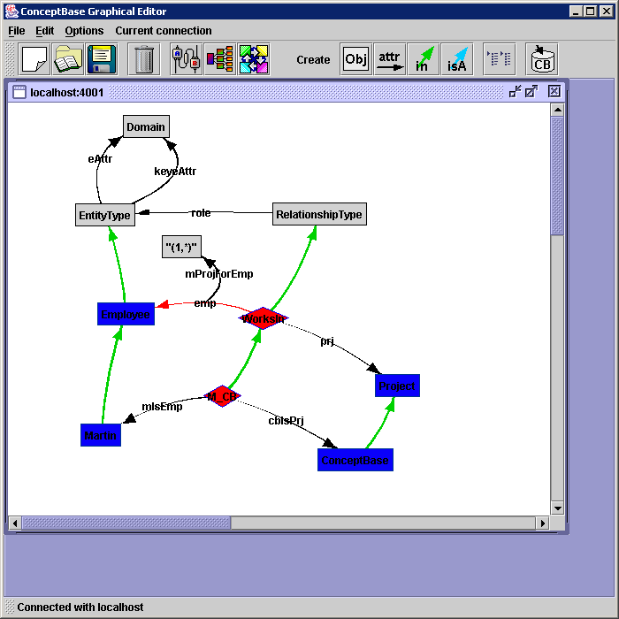

The Employee model can be found in the directory $CB_HOME/examples/QUERIES/.
It consists out of the following files:
Note, that the files must be loaded in this order into the server.
This example gives a first introduction into some features introduced in
ConceptBase version 4.0. It demonstrates the use of meta formulas and
graphical types while building a Telos model describing
Entity-Relationship-Diagrams. The following model forms the basis:
{**************************}
{* *}
{* File: ERModelClasses *}
{* *}
{**************************}
Class Domain
end
Class EntityType with attribute
eAttr : Domain;
keyeAttr : Domain
end
Class RelationshipType with attribute
role : EntityType
end
Class MinMax
end
"(1,*)" in MinMax with
end
"(1,1)" in MinMax with
end
Attribute RelationshipType!role with attribute
minmax: MinMax
end
The model defines the concepts of EntityTypes and RelationshipTypes. Each entity that participates in a relationship plays a particular role. This role is modelled as a Telos attribute-link of the object RelationshipType. The attributes describing the entities are modelled as Telos attribute-links to a class Domain containing the value-sets. Roles can be restricted by the “(min,max)”-constraints “(1,*)” or “(1,1)”. The next model contains a concrete ER-model.
{**************************}
{* *}
{* File: Emp_ERModel *}
{* *}
{**************************}
Class Employee in EntityType with
keyeAttr,attribute
ssn : Integer
eAttr,attribute
name : String
end
Class Project in EntityType with
keyeAttr,attribute
pno : Integer
eAttr,attribute
budget : Real
end
Integer in Domain end
Real in Domain end
String in Domain end
Class WorksIn in RelationshipType with role,attribute
emp : Employee;
prj : Project
end
WorksIn!emp with minmax
mProjForEmp: "(1,*)"
end
WorksIn!prj with minmax
mEmpForProj: "(1,*)"
end
ConceptBase in Project with pno
cb_pno : 4711
end
Martin in Employee with ssn
martinSSN : 4712
end
M_CB in WorksIn with
emp
mIsEmp : Martin
prj
cbIsPrj : ConceptBase
end
Hans in Employee with ssn
hans_ssn : 4714
end
The entity-types Employee and Project participate in a binary relationship WorksIn. The attributes Employee!ssn and Project!pno are key-attributes of the respective objects.
The above model distinguishes attributes and key attributes. One important constraint on key attributes is monovalence. In the previous releases of ConceptBase it was possible to declare Telos-attributes as instance of the attribute-categories single or necessary, but the constraint ensuring this property could not be formulated in a general manner, because the use of variables as placeholders for Telos-classes e.g in an In-Literal was prohibited. To overcome this restriction, meta formulas have been integrated into the system. An assertion is a meta formula if it contains such a class-variable. The system tries to replace this meta formula by a set of semantic equivalent formulas which contain no class-variables. In previous releases properties as single or necessary had to be ensured “manually” by adding a constraint for each such attribute. This job is now performed automatically by the system.
The following meta formula ensures the necessary property of attributes, which are instances of the category Proposition!necessary. The semantics of this property is, that for every instance of the source class of this attribute there must exist an instantiation of this attribute.
Class with constraint, attribute
necConstraint:
$ forall c,d/Proposition p/Proposition!necessary x,m/VAR
P(p,c,m,d) and (x in c) ==>
exists y/VAR (y in d) and (x m y) $
end
It reads as follows:
For each attribute with label m between the classes c and d, which instantiates the attribute Proposition!necessary and for each instance x of c there should exist an instance y of d which is destination of an attribute of x with category m.
One should notice that the predicates In(x,c) and In(y,d) cause this formula to be a meta formula. The instantiation of x and m to the class VAR is just a syntactical construct. Every variable in a constraint has to be bound to a class. This restriction is somehow contrary to the concept of meta formulas and the VAR-construct is a kind of compromise. The resulting In-predicates are discarded during the processing of meta formulas. The VAR-construct is only allowed in meta formulas. It enables the user to leave the concrete classes of x and m open, without instantiating them to for example to Proposition.
The single-constraint can be defined in analogy. These constraints can be added to the system as if they were “normal” constraints. Their effect becomes visible, when declaring attributes as necessary or single. This is done in the following model.
{**************************}
{* *}
{ File: ERSingNec *}
{* *}
{**************************}
{* necessary constraint (metaformula) *}
Class with constraint
necConstraint:
$ forall c,d/Proposition p/Proposition!necessary x,m/VAR
P(p,c,m,d) and (x in c) ==>
exists y/VAR (y in d) and (x m y) $
end
{* every Entity has a key *}
Class EntityType with
necessary
keyeAttr : Domain
end
{* single constraint (metaformula) *}
Class with constraint
singleConstraint :
$ forall c,d/Proposition p/Proposition!single x,m/VAR
P(p,c,m,d) and (x in c) ==>
(
forall a1,a2/VAR
(a1 in p) and (a2 in p) and Ai(x,m,a1) and Ai(x,m,a2) ==>
(a1=a2)
) $
end
{* every Entity key is monovalued ( = necessary and single)*}
Class EntityType with rule
keys_are_necessary:
$forall a/EntityType!keyeAttr In(a,Proposition!necessary)$;
keys_are_single:
$forall a/EntityType!keyeAttr In(a,Proposition!single)$
end
The effects of this transaction can be shown by displaying the instances of instances of the class metaMSFOLconstraint. The single- and necessary constraints are inserted into this class after adding them to the system. These constraints themselves can have specializations: constraints which are added automatically to the system when inserting objects into the attribute-category single resp. necessary.
For the ER-example, one of the created formulas reads as:
$ forall x/EntityType (exists y/Domain (x keyeAttr y)) $
We observe the relationship to the necConstraint-formula: the formula has been generated by computing one extension of In(p,Proposition!necessary) and P(p,c,m,d) and replacing the predicates In(p, Proposition!necessary and P(p,c,m,d) by this extension, which results in the following substitution for the remaining formula:
| c | EntityType |
| d | Domain |
| m | keyeAttr |
Another use of Metaformulas is the formulation of deductive rules. Metaformulas defining deductive rules extend the possibilities of defining derived knowledge.
This example first demonstrates the use of meta formulas to assign graphical types to object-categories. The minimal graphical convention for ER-diagrams is to use rectangular boxes for entities and diamond-shaped boxes for relationships. In our modelling example these graphical types are assigned to objects which are instances of EntityType or RelationshipType and to instances of these objects.
{*******************************************}
{* *}
{* File: ERModelGTs *}
{* Definition of the graphical palette for *}
{* ER-Diagrams for use on color displays *}
{* *}
{*******************************************}
{* graphical type for inconsistent roles *}
Class InconsistentGtype in JavaGraphicalType with
attribute,property
textcolor : "0,0,0";
edgecolor : "255,0,0";
edgewidth : "2"
implementedBy
implBy : "i5.cb.graph.cbeditor.CBLink"
priority
p : 14
end
{* graphical type for entities *}
Class EntityTypeGtype in JavaGraphicalType with
property
bgcolor : "10,0,250";
textcolor : "0,0,0";
linecolor : "0,55,144";
shape : "i5.cb.graph.shapes.Rect"
implementedBy
implBy : "i5.cb.graph.cbeditor.CBIndividual"
priority
p : 12
end
{* graphical type for relationships *}
Class RelationshipGtype in JavaGraphicalType with
property
bgcolor : "255,0,0";
textcolor : "0,0,0";
linecolor : "0,0,255";
shape : "i5.cb.graph.shapes.Diamond"
implementedBy
implBy : "i5.cb.graph.cbeditor.CBIndividual"
priority
p : 13
end
{* graphical palette *}
Class ER_GraphBrowserPalette in JavaGraphicalPalette with
contains,defaultIndividual
c1 : DefaultIndividualGT
contains,defaultLink
c2 : DefaultLinkGT
contains,implicitIsA
c3 : ImplicitIsAGT
contains,implicitInstanceOf
c4 : ImplicitInstanceOfGT
contains,implicitAttribute
c5 : ImplicitAttributeGT
contains
c6 : DefaultIsAGT;
c7 : DefaultInstanceOfGT;
c8 : DefaultAttributeGT;
c14 : EntityTypeGtype;
c15 : RelationshipGtype;
c16 : InconsistentGtype
end
EntityType with rule
EntityGTRule:
$ forall e/EntityType A(e,graphtype,EntityTypeGtype)$ ;
EntityGTMetaRule:
$ forall x/VAR (exists e/EntityType In(x,e)) ==>
A(x,graphtype,EntityTypeGtype)$
end
RelationshipType with rule
RelationshipGTRule:
$ forall r/RelationshipType A(r,graphtype,RelationshipGtype)$ ;
RelationshipGTMetaRule:
$ forall x/VAR (exists r/RelationshipType In(x,r)) ==>
A(x,graphtype,RelationshipGtype) $
end
To activate the ER_GraphBrowserPalette , select this graphical palette when you start the Graph Editor or make a new connection in the Graph Editor (see section 8.2).
The necessary and single conditions on attributes from the previous section could also be expressed as deductive rule. The difference is, that if they are formulated as constraints, every transaction violating the constraint would be rejected. The definition of rules handling necessary and single enables the user to handle inconsistencies in his model. The following example demonstrates this concept in the context of our ER-model. The example defines rules handling the restriction of roles by the “(min,max)”-constraint “(1,*)”. This restriction is not implemented using constraints. Instead a new Class Inconsistent is defined, containing all role-links which violate the “(1,*)” constraint. These inconsistent links get a different graphical type (e.g a red coloured attribute link) than consistent role links to visualize the inconsistency graphically.
{*******************************************}
{* *}
{* File: ERIncons *}
{* Definition of a Class "Inconsistent" *}
{* containing roles violating the "(1,*)" *}
{* constraint *}
{* *}
{*******************************************}
{* new attribute category revNec for attributes
which are "reverse necessary" *}
Class with attribute
revNec : Proposition
end
{* roles with "(1,*)" must fullfill revNec property *}
RelationshipType with rule, attribute
revNecRule:
$ forall ro/RelationshipType!role
A(ro,minmax,"(1,*)") ==> In(ro,Class!revNec) $
end
{* definition of Class "Inconsistent" *}
{* forall instances "p" of Class!revNec:
If there exists a destination class "d", there must
be a source class "c" with an attribute instantiating "p",
otherwise "p" is inconsistent
*}
Class Inconsistent with rule, attribute
revNecInc:
$ forall p/Class!revNec
(exists c,m,d/VAR y/VAR P(p,c,m,d) and In(y,d) and
not(exists x/VAR In(x,c) and A(x,m,y))) ==>
In(p,Inconsistent)$
end
To activate the different graphical representation of inconsistent roles, the definition of the graphical type for attributes has to be modified. Tell the following frame:
Inconsistent with rule,attribute
incRule :
$ forall e/Attribute In(e,Inconsistent) ==>
(e graphtype InconsistentGtype)$
end
The effect of these transactions can be shown when starting the Graph Editor and displaying the attributes of the RelationshipType instance WorksIn. Be sure to switch the graph editor to the palette ER_GraphBrowserPalette before doing so (see section 8.2). The attribute WorksIn!emp is displayed as red link like in figure D.1. If you had already started the graph editor before telling the last frame, you should synchronize it with the CBserver via the menu Current connection. By telling
H_CB in WorksIn with
emp
hIsEmp : Hans
prj
cbIsPrj : ConceptBase
end
the inconsistency is removed from the model. To see the update of the graphical type in the Graph Editor, you have to select the inconsistent link and select “Validate and update selected objects” from the “Current connection” menu.

Figure D.1: Graph Editor showing the example model with inconsistent link
Metaformulas extend the expressive power of defining rules and constraints for ConceptBase Objectbases. The implementation of this mechanism is not complete at the moment, but should enable the use of the most frequently requested concepts like single and necessary. Some limitations are listed below:
$ forall x/1 ...$are regarded as redundant, because the object 1 as instance of Integer should have no instances. Another justification is, that the use of meta formulas should be restricted to user-defined modeling tasks. Manipulation of the most system classes is disabled for reasons of efficiency and safety.
In the case of deductive rules, additional problems arise similar to the straticfication problem. At the moment only monotonous transactions are allowed. This means that generated formulas can only be inserted or deleted during one transaction, both operations at the same time are not permitted.
The meta formula mechanism also influences the efficiency of the system: every transaction has to be supervised whether it affects the meta formulas or one of the generated formulas. If the preconditions of the generated formulas don’t hold anymore, e.g. if the instances of EntityType!eAttr are no longer instances of Proposition!necessary in the previous model, the corresponding generated formula has to be deleted. If additional attributes are instantiated to Proposition!necessary, additional formulas have to be created. The process of supervising the transactions is quite expensive and if it slows down the overall performance too much, some of the meta formuals can be disabled temporarily (Untelling a meta formula removes all the code generated).
Many more examples for meta formulas, e.g. for defining transitivity of attributes, are available from the CB-Forum (link).